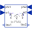

RotationalDampingConstant |
Type Information
| Real |
Quantity: RotationalDampingConstant Unit: N.m.s/rad |
|---|
Used in Components (7)
|  |
Modelica.Mechanics.Rotational.Examples.Utilities Input/output block of a spring/damper model |
|
Modelica.Mechanics.Rotational.Examples.Utilities Linear 1D rotational spring and damper in parallel (phi and w are not used as states) |
|
|
Modelica.Mechanics.Rotational.Components Linear 1D rotational damper |
|
|
Modelica.Mechanics.Rotational.Components Linear 1D rotational spring and damper in parallel |
|
|
Modelica.Mechanics.Rotational.Components Backlash connected in series to linear spring and damper (backlash is modeled with elasticity) |
|
|
Modelica.Mechanics.Rotational.Components Backlash connected in series to linear spring and damper (backlash is modeled with elasticity; at start of contact the flange torque can jump, contrary to the ElastoBacklash model) |
|
|
Modelica.Mechanics.Rotational.Components Realistic model of a gearbox (based on LossyGear) |